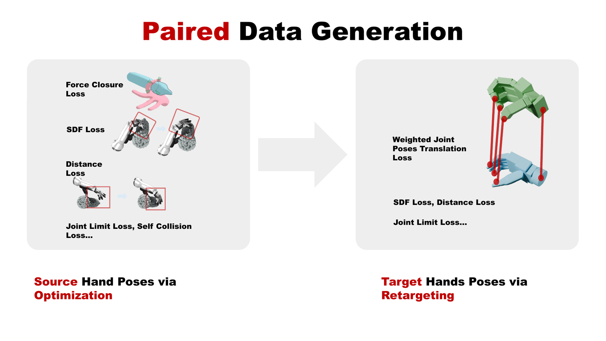
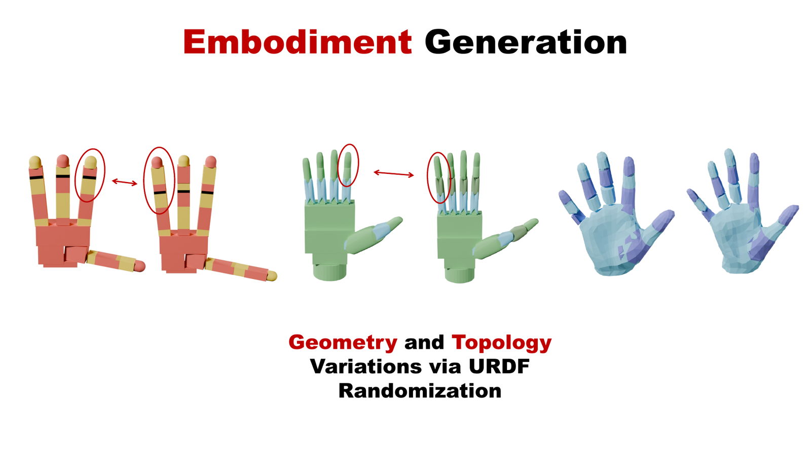
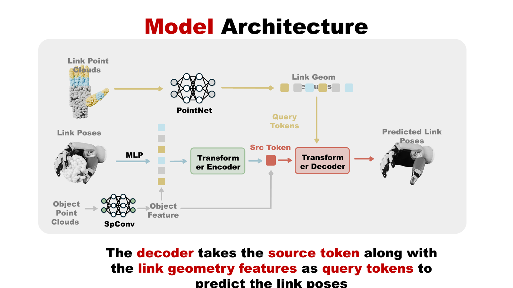
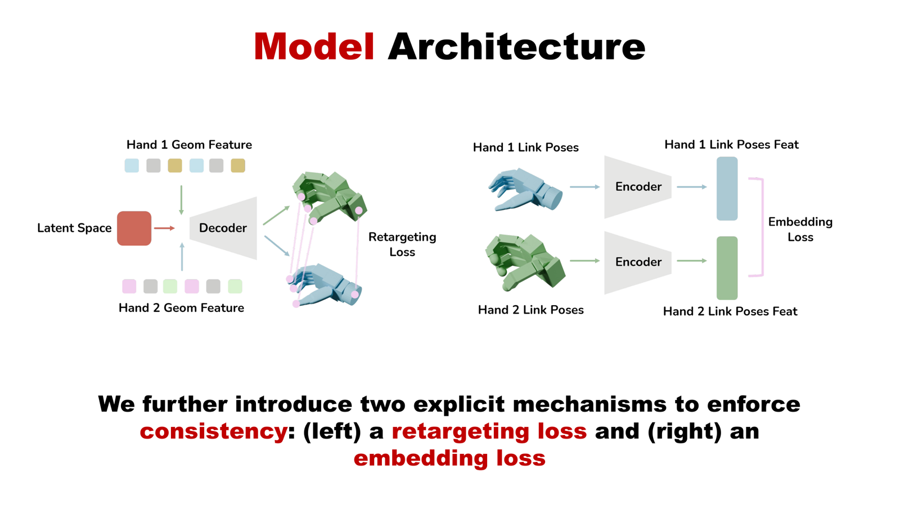
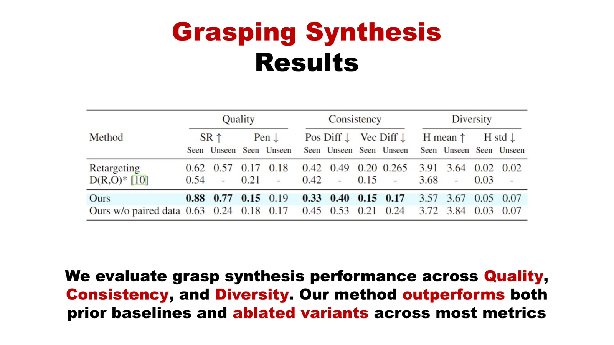

Overview
XDex learns dexterous grasping policies that transfer across a large and diverse collection of robot hand embodiments — scaling to 1000 hands. Below we show real-world policy deployment on unseen hands and objects, generalization across hand topologies, a teleoperation application via neural retargeting, our data-generation and model design, and grasp-synthesis results.
Policy Deployment
Using an unseen hand (Ability Hand + X-Arm) and unseen objects.
Generalize to Different Topologies
3-Finger XHand
2-Finger XHand
Application: Teleoperation via Neural Retargeting
Twin-Objects Teleoperation w/o Neural Retargeting
Standard retargeting, due to the lack of object features, cannot ensure successful task completion.
Twin-Objects Teleoperation with Neural Retargeting
Our model takes human hand keypoints as input, conditioned on the object features and the geometry of the robot hand, ensuring the robot hand mirrors the human hand's pose while still completing the task.
Method
Paired Data Generation

Embodiment Generation

Model Architecture


We further leverage the model to generate additional grasp poses (validated in simulation) to augment the dataset, significantly accelerating data generation: grasps are optimized for a single hand and retargeted to 50 hands, while the network generates grasp poses for the remaining hands.
Results
Grasp Synthesis Results

BibTeX
@inproceedings{xdex2026,
title = {XDex: Learning Cross-Embodiment Dexterous Grasping with 1000 Hands},
author = {Anonymous Authors},
booktitle = {Conference on Robot Learning (CoRL)},
year = {2026}
}